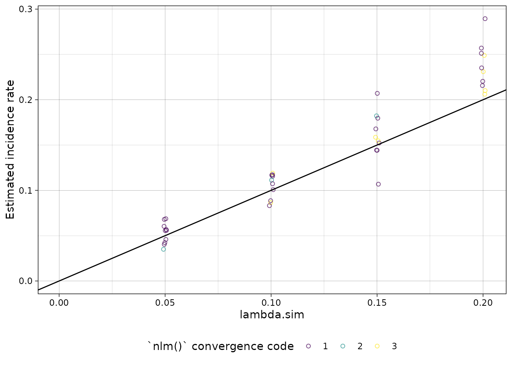

Generate a simulated cross-sectional sample and estimate seroincidence
Enteric Fever using HlyE IgG and/or HlyE IgA
Source:vignettes/articles/simulate_xsectionalData.Rmd
simulate_xsectionalData.RmdThis vignette shows how to simulate a cross-sectional sample of
seroresponses for incident infections as a Poisson process with
frequency lambda. Responses are generated for the
antibodies given in the antigen_isos argument.
Age range of the simulated cross-sectional record is
lifespan.
The size of the sample is nrep.
Each individual is simulated separately, but different antibodies are modelled jointly.
Longitudinal parameters are calculated for an age:
age.fx (fixed age). However, when age.fx is
set to NA then the age at infection is used.
The boolean renew.params determines whether each
infection uses a new set of longitudinal parameters, sampled at random
from the posterior predictive output of the longitudinal model. If set
to FALSE a parameter set is chosen at birth and kept, but:
1. the baseline antibody levels (y0) are updated with the
simulated level (just) prior to infection, and 2. when
is.na(age.fx) then the selected parameter sample is updated
for the age when infection occurs.
There is also a variable n.mc: when n.mc==0
then a random MC sample is chosen out of the posterior set (1:4000).
When n.mc is given a value in 1:4000 then the chosen number
is fixed and reused in any subsequent infection. This is for diagnostic
purposes.
library(serocalculator)
library(tidyverse)
#> ── Attaching core tidyverse packages ──────────────────────── tidyverse 2.0.0 ──
#> ✔ dplyr 1.1.4 ✔ readr 2.1.4
#> ✔ forcats 1.0.0 ✔ stringr 1.5.1
#> ✔ ggplot2 3.4.4 ✔ tibble 3.2.1
#> ✔ lubridate 1.9.3 ✔ tidyr 1.3.0
#> ✔ purrr 1.0.2
#> ── Conflicts ────────────────────────────────────────── tidyverse_conflicts() ──
#> ✖ dplyr::filter() masks stats::filter()
#> ✖ dplyr::lag() masks stats::lag()
#> ℹ Use the conflicted package (<http://conflicted.r-lib.org/>) to force all conflicts to become errors
library(ggbeeswarm) # for plotting
#load in longitudinal parameters, these are modelled from all SEES cases across all ages and countries
dmcmc <- getAdditionalData(fileURL = "https://osf.io/download/rtw5k") |>
ungroup()Simulate cross-sectional data
#set seed to reproduce results
set.seed(54321)
# Specify the antibody-isotype responses to simulate
antibodies = c("HlyE_IgA", "HlyE_IgG")
# simulated incidence rate per person-year
lambda <- 0.2;
# range covered in simulations
lifespan <- c(0,20);
# cross-sectional sample size
nrep <- 100
# biologic noise distribution
dlims <- rbind(c(0.01, 0.5),c(0.01, 0.5))
#generate cross-sectional data
csdata0 <- sim.cs(
curve_params = dmcmc,
lambda = lambda,
n.smpl = nrep,
age.rng = lifespan,
antigen_isos = antibodies,
n.mc = 0,
renew.params = TRUE,
add.noise = TRUE,
noise_limits = dlims
)Estimate seroincidence
We need to provide noise parameters for the analysis; here, we define them directly in our code:
cond <- data.frame(
antigen_iso = c("HlyE_IgG", "HlyE_IgA"),
nu = c(0.5, 0.5), # Biologic noise (nu)
eps = c(0.2, 0.2), # M noise (eps)
y.low = c(1, 1), # low cutoff (llod)
y.high = c(5e6, 5e6)) # high cutoff (y.high)We also need to convert the data to a long format for analysis:
csdataL <-
csdata0 %>%
as_tibble() %>%
pivot_longer(
cols = c("HlyE_IgG", "HlyE_IgA"),
names_to = "antigen_iso",
values_to = "value")We can plot the distribution of the antibody responses in the simulated data.
ggplot(csdataL, aes(x=as.factor(antigen_iso), y= value)) +
geom_beeswarm(size= .2, alpha = .3, aes(color = antigen_iso), show.legend = F) +
geom_boxplot(outlier.colour = NA, fill = NA) +
scale_y_log10() +
theme_linedraw() +
labs(x="antigen - isotype")
We can estimate incidence with est.incidence():
est1 = est.incidence(
pop_data = csdataL,
curve_params = dmcmc,
noise_params = cond,
lambda_start = .1,
build_graph = T,
verbose = T, # print updates as the function runs
print_graph = F, # display the log-likelihood curve while `est.incidence()` is running
antigen_isos = antibodies)
#> nrow(curve_params) = 8000
#> Initial negative log-likelihood: 696.237163189116
#> building likelihood graph
#> about to call `nlm()`
#> iteration = 0
#> Step:
#> [1] 0
#> Parameter:
#> [1] -2.302585
#> Function Value
#> [1] 696.2372
#> Gradient:
#> [1] -58.2029
#>
#> iteration = 1
#> Step:
#> [1] 0.7148304
#> Parameter:
#> [1] -1.587755
#> Function Value
#> [1] 670.2654
#> Gradient:
#> [1] -10.83126
#>
#> iteration = 2
#> Step:
#> [1] 0.1634419
#> Parameter:
#> [1] -1.424313
#> Function Value
#> [1] 669.5905
#> Gradient:
#> [1] 2.693228
#>
#> iteration = 3
#> Step:
#> [1] -0.03254736
#> Parameter:
#> [1] -1.45686
#> Function Value
#> [1] 669.5476
#> Gradient:
#> [1] -0.05627469
#>
#> iteration = 4
#> Parameter:
#> [1] -1.456194
#> Function Value
#> [1] 669.5476
#> Gradient:
#> [1] -0.0003667786
#>
#> Relative gradient close to zero.
#> Current iterate is probably solution.
#>
#> Elapsed time:
#> user system elapsed
#> 3.716 0.000 3.716We can extract summary statistics with summary():
summary(est1)
#> # A tibble: 1 × 10
#> est.start incidence.rate SE CI.lwr CI.upr coverage log.lik iterations
#> <dbl> <dbl> <dbl> <dbl> <dbl> <dbl> <dbl> <int>
#> 1 0.1 0.233 0.0254 0.188 0.289 0.95 -670. 4
#> # ℹ 2 more variables: antigen.isos <chr>, nlm.convergence.code <ord>We can plot the log-likelihood curve with plot():
plot(est1)
We can set the x-axis to a logarithmic scale, if desired:
plot(est1, log_x = TRUE)
Simulate multiple clusters with different lambdas
library(parallel)
library(doParallel)
#> Loading required package: foreach
#>
#> Attaching package: 'foreach'
#> The following objects are masked from 'package:purrr':
#>
#> accumulate, when
#> Loading required package: iterators
library(doRNG) # for reproducible results
#> Loading required package: rngtools
library(rngtools)
n_cores = max(1, parallel::detectCores() - 1)
# n_cores = 1
print(n_cores)
#> [1] 3In the preceding code chunk, we have determined that we can use 3 CPU cores to run computations in parallel.
doParallel::registerDoParallel(cores = n_cores)
#number of clusters
nclus = 10;
# cross-sectional sample size
nrep <- 100
#incidence rate in e
lmbdaVec <- c(.05,.1, .15, .2, .3)
n_lambda = length(lmbdaVec)
#trying to reproduce results using parallel
rng <- RNGseq(n_lambda * nclus, 1234)
sim.df <-
foreach(i = 1:length(lmbdaVec),
.combine = bind_rows) %:%
foreach(n = 1:nclus,
r = rng[(i - 1) * nclus + 1:nclus],
.combine = bind_rows) %dopar%
{
l = lmbdaVec[i]
rngtools::setRNG(r)
sim.cs(
lambda = l,
n.smpl = nrep,
age.rng = lifespan,
antigen_isos = antibodies,
n.mc = 0,
renew.params = TRUE,
add.noise = TRUE,
curve_params = dmcmc,
noise_limits = dlims
) %>%
mutate(lambda.sim = l, cluster = n)
}
print(sim.df)
#> # A tibble: 5,000 × 5
#> age HlyE_IgA HlyE_IgG lambda.sim cluster
#> <dbl> <dbl> <dbl> <dbl> <int>
#> 1 10.8 0.592 0.482 0.05 1
#> 2 4.87 0.971 24.2 0.05 1
#> 3 17.8 0.576 0.466 0.05 1
#> 4 7.63 0.531 0.553 0.05 1
#> 5 10.1 0.293 0.134 0.05 1
#> 6 16.8 1.21 1.48 0.05 1
#> 7 11.3 0.701 0.227 0.05 1
#> 8 18.5 0.535 0.698 0.05 1
#> 9 10.1 1.70 2.00 0.05 1
#> 10 16.8 93.1 4.19 0.05 1
#> # ℹ 4,990 more rowsWe can plot the distributions of the simulated responses
sim.df.l <- sim.df %>%
pivot_longer(cols = c("HlyE_IgG", "HlyE_IgA"), values_to = c("value"), names_to = c("antigen_iso"))
ggplot(sim.df.l, aes(x = as.factor(cluster), y= value)) +
geom_beeswarm(size= .2, alpha = .3, aes(color = antigen_iso)) +
geom_boxplot(outlier.colour = NA, fill = NA) +
scale_y_log10() +
facet_wrap(~antigen_iso + lambda.sim, nrow = 2) +
theme_linedraw()
Estimate incidence in each cluster
ests =
sim.df %>%
as_tibble() %>%
pivot_longer(
cols = c("HlyE_IgG", "HlyE_IgA"),
names_to = "antigen_iso",
values_to = "value") %>%
est.incidence.by(
curve_params = dmcmc,
noise_params = cond,
num_cores = n_cores,
strata = c("lambda.sim", "cluster"),
curve_strata_varnames = NULL,
noise_strata_varnames = NULL,
verbose = TRUE,
build_graph = TRUE, # slows down the function substantially
antigen_isos = c("HlyE_IgG", "HlyE_IgA")
)
#> Data has been stratified.
#> Here are the strata that will be analyzed:
#> # A tibble: 50 × 4
#> Stratum lambda.sim cluster n
#> <chr> <dbl> <int> <int>
#> 1 Stratum 1 0.05 1 100
#> 2 Stratum 2 0.05 2 100
#> 3 Stratum 3 0.05 3 100
#> 4 Stratum 4 0.05 4 100
#> 5 Stratum 5 0.05 5 100
#> 6 Stratum 6 0.05 6 100
#> 7 Stratum 7 0.05 7 100
#> 8 Stratum 8 0.05 8 100
#> 9 Stratum 9 0.05 9 100
#> 10 Stratum 10 0.05 10 100
#> # ℹ 40 more rows
#> Setting up parallel processing.
#> Elapsed time for parallelized code:
#> user system elapsed
#> 0.276 0.072 324.150summary(ests) produces a tibble() with some
extra meta-data:
summary(ests)
#> Seroincidence estimated given the following setup:
#> a) Antigen isotypes : HlyE_IgG, HlyE_IgA
#> b) Strata : lambda.sim, cluster
#>
#> Seroincidence estimates:
#> # A tibble: 50 × 14
#> Stratum lambda.sim cluster n est.start incidence.rate SE CI.lwr
#> <chr> <dbl> <int> <int> <dbl> <dbl> <dbl> <dbl>
#> 1 Stratum 1 0.05 1 100 0.1 0.0599 0.00889 0.0448
#> 2 Stratum 2 0.05 2 100 0.1 0.0446 0.00713 0.0326
#> 3 Stratum 3 0.05 3 100 0.1 0.0562 0.00805 0.0425
#> 4 Stratum 4 0.05 4 100 0.1 0.0467 0.00759 0.0340
#> 5 Stratum 5 0.05 5 100 0.1 0.0550 0.00821 0.0411
#> 6 Stratum 6 0.05 6 100 0.1 0.0641 0.00940 0.0481
#> 7 Stratum 7 0.05 7 100 0.1 0.0453 0.00723 0.0331
#> 8 Stratum 8 0.05 8 100 0.1 0.0559 0.00823 0.0419
#> 9 Stratum 9 0.05 9 100 0.1 0.0575 0.00899 0.0423
#> 10 Stratum 10 0.05 10 100 0.1 0.0760 0.0104 0.0581
#> # ℹ 40 more rows
#> # ℹ 6 more variables: CI.upr <dbl>, coverage <dbl>, log.lik <dbl>,
#> # iterations <int>, antigen.isos <chr>, nlm.convergence.code <ord>We can explore the summary table interactively using
DT::datatable()
We can plot the likelihood for a single simulated cluster by
subsetting that simulation in ests and calling
plot():
plot(ests[1])
We can also plot log-likelihood curves for several clusters at once (your computer might struggle to plot many at once):
plot(ests[1:5])
The log_x argument also works here:
plot(ests[1:5], log_x = TRUE)
nlm() convergence codes
Make sure to check the nlm() exit codes (codes 3-5
indicate possible non-convergence):
summary(ests) |>
as_tibble() |> # removes extra meta-data
select(Stratum, nlm.convergence.code) |>
filter(nlm.convergence.code > 2)
#> # A tibble: 3 × 2
#> Stratum nlm.convergence.code
#> <chr> <ord>
#> 1 Stratum 12 3
#> 2 Stratum 25 3
#> 3 Stratum 47 3Solutions to nlm() exit codes 3-5:
- 3: decrease the
stepminargument toest.incidence()/est.incidence.by() - 4: increase the
iterlimargument toest.incidence()/est.incidence.by() - 5: increase the
stepmaxargument toest.incidence()/est.incidence.by()
We can extract the indices of problematic strata, if there are any:
A few clusters had problems; let’s take a look:
plot(ests[problem_strata], log_x = TRUE)
Visually, it looks like we approximately reached the MLE, but we
should probably re-run those clusters, adjusting the nlm()
settings appropriately, to be sure.
plot distribution of estimates by simulated incidence rate
Finally, we can look at our simulation results:

extra (remove?)
We can calculate the log-likelihood of the data as a function of the
incidence rate, even without running est.incidence().
lik_HlyE_IgA = graph.loglik(
pop_data = csdataL,
curve_params =
dmcmc |>
dplyr::mutate(
alpha = .data$alpha * 365.25,
d = .data$r - 1),
noise_params = cond,
antigen_isos = "HlyE_IgA",
log_x = TRUE
) |>
print()
lik_HlyE_IgG = graph.loglik(
pop_data = csdataL,
curve_params =
dmcmc |>
dplyr::mutate(
alpha = .data$alpha * 365.25,
d = .data$r - 1),
noise_params = cond,
antigen_isos = "HlyE_IgG",
log_x = TRUE
) |>
print()
lik_both = graph.loglik(
pop_data = csdataL,
curve_params =
dmcmc |>
dplyr::mutate(
alpha = .data$alpha * 365.25,
d = .data$r - 1),
noise_params = cond,
antigen_isos = c("HlyE_IgG", "HlyE_IgA"),
log_x = TRUE
) |>
print()